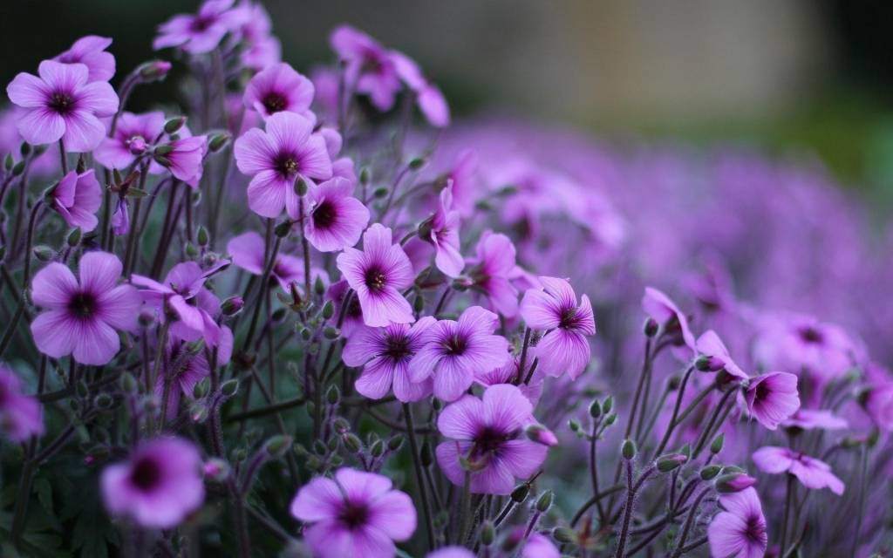
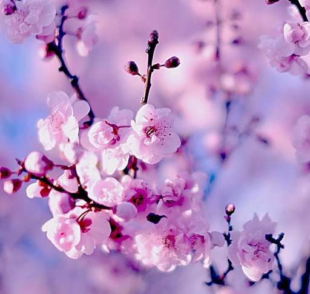
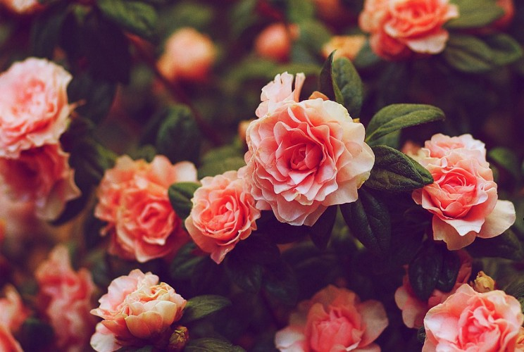

Цветы этой планеты
На планете 3340000 видов растений. Многие из них появились
еще 500000 лет до нашей эры. Они были пищей для динозавтров и
видели большой взрыв. Пришли к нам из океана. Так же есть много
видов водорослей. Они безумно полезны для нашей планеты.
Самые красивые растения планеты
-
Фиолетовые цветы
Этот вид растений растет в юэной части Австралии. Очень любит воду и

влагу. Опыляется местными насекомыми -
Розовые цветы
Сакура, растет в Японии. Считается национальным священным деревом.

Цветет 2 месяца в году, весной. -
Нежные цветы
За этими цветами нужно ухаживать. Поливать 3 раза в день, опрыскивать лепестки

водой и протирать листья 1 раз в день.
Бабочки и цветы

| Цвет | Место | Влага | |
|---|---|---|---|
| Цветок 1 | Фиолетовы | Австралия | 30 |
| Цветок 2 | Розовый | Канада | 61 |
| Цветок 3 | Нежный | Уэльс | 44 |
Самые необычние цветы мира
DESERT ROSE:
Сказки с цветами:
- Аленький цветочек
-
Это сказка про красавицу, которая
захотела цветочек и отец ей его привез. - Русалочка
-
Сказака про принцессу, которая жила
под водой и собирала подводные цветы. - Алиса в стране цудес
-
Сказка про девочку, которая пошла за
кроликом, попала в страну чудес и
разговаривала с цветами.